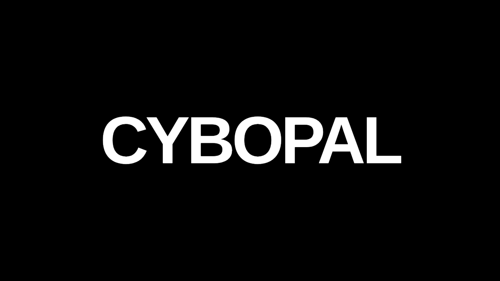
s01 字标broll-code · 1.33s · 0–32
黑场大字 CYBOPAL，字几乎不动，像镜头还在慢慢后退。
CYBOPAL
text
Photoreal product commercial, 1.33s, 24fps, 16:9. Pure black studio, thin rim light on the metal, soft contact shadow, faint floor reflection. Subject: a six-axis AI monitor arm on a desk, matte metal segments, a 27-inch display. static, composition centered. Full-frame kinetic type on black: "CYBOPAL". No product, no people. No people, no voiceover, no hands. Lens around 40mm, aperture f/4.
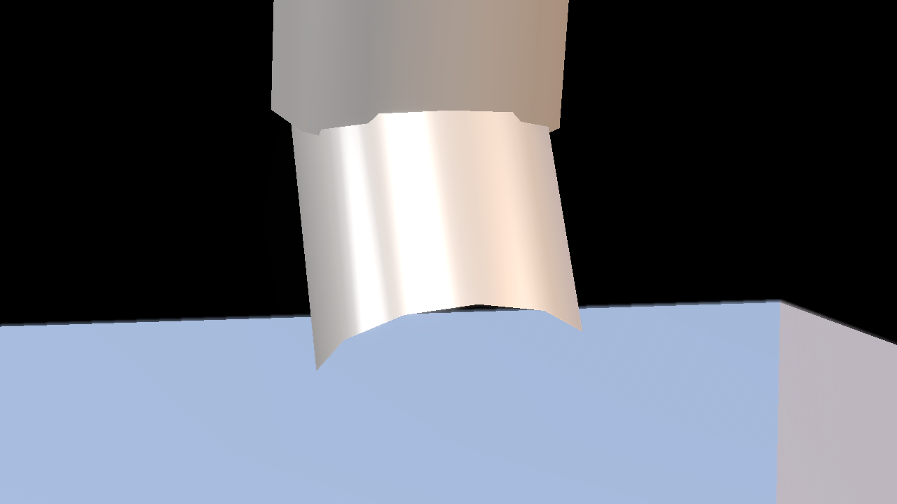
s02 肩关节微距3d · 2.71s · 32–97
肩轴微距，匀速后拉，轮廓光勾出转轴。
slow-pull macro product
Photoreal product commercial, 2.71s, 24fps, 16:9. Pure black studio, thin rim light on the metal, soft contact shadow, faint floor reflection. Subject: a six-axis AI monitor arm on a desk, matte metal segments, a 27-inch display. Slow constant pull-back, same speed as the other product shots, composition macro. The product itself holds still. The arm holds its pose. No people, no voiceover, no hands. Lens around 85mm, aperture f/2.8.
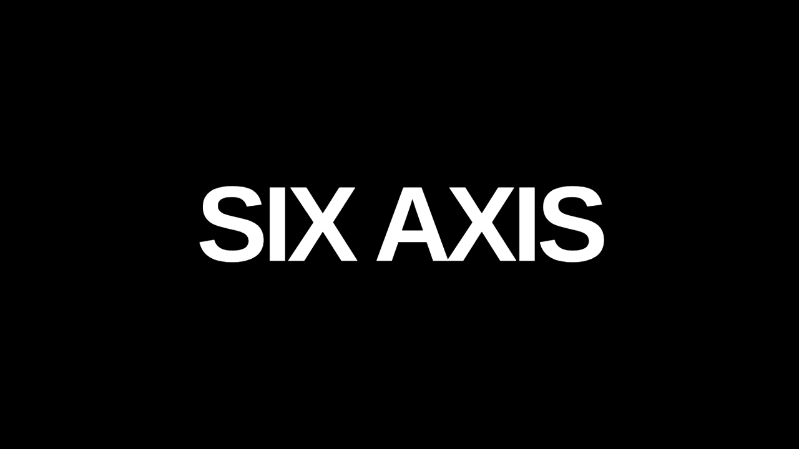
s03 六轴broll-code · 0.67s · 97–113
半拍不到的字卡。
SIX AXIS
text
Photoreal product commercial, 0.67s, 24fps, 16:9. Pure black studio, thin rim light on the metal, soft contact shadow, faint floor reflection. Subject: a six-axis AI monitor arm on a desk, matte metal segments, a 27-inch display. static, composition centered. Full-frame kinetic type on black: "SIX AXIS". No product, no people. No people, no voiceover, no hands. Lens around 40mm, aperture f/4.
s04 肘关节微距3d · 2.71s · 113–178
肘轴微距，后拉速度与上一镜相同。
slow-pull macro product
Photoreal product commercial, 2.71s, 24fps, 16:9. Pure black studio, thin rim light on the metal, soft contact shadow, faint floor reflection. Subject: a six-axis AI monitor arm on a desk, matte metal segments, a 27-inch display. Slow constant pull-back, same speed as the other product shots, composition macro. The product itself holds still. The arm holds its pose. No people, no voiceover, no hands. Lens around 85mm, aperture f/2.8.
s05 它会动broll-code · 0.67s · 178–194
短字卡，把动作承诺出去。
IT MOVES
text
Photoreal product commercial, 0.67s, 24fps, 16:9. Pure black studio, thin rim light on the metal, soft contact shadow, faint floor reflection. Subject: a six-axis AI monitor arm on a desk, matte metal segments, a 27-inch display. static, composition centered. Full-frame kinetic type on black: "IT MOVES". No product, no people. No people, no voiceover, no hands. Lens around 40mm, aperture f/4.
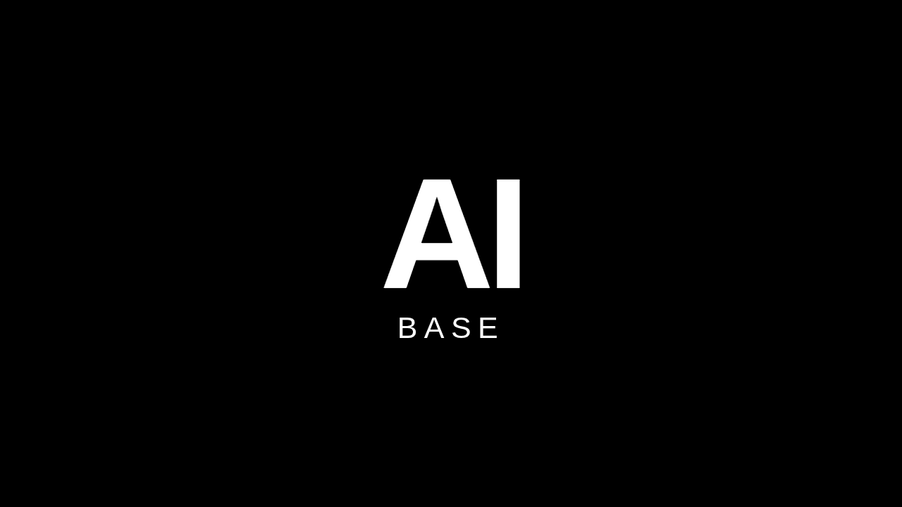
s06 AI 底座broll-code · 1.00s · 194–218
两行参数字。
AI
BASE
text
Photoreal product commercial, 1.00s, 24fps, 16:9. Pure black studio, thin rim light on the metal, soft contact shadow, faint floor reflection. Subject: a six-axis AI monitor arm on a desk, matte metal segments, a 27-inch display. static, composition centered. Full-frame kinetic type on black: "AI / BASE". No product, no people. No people, no voiceover, no hands. Lens around 40mm, aperture f/4.
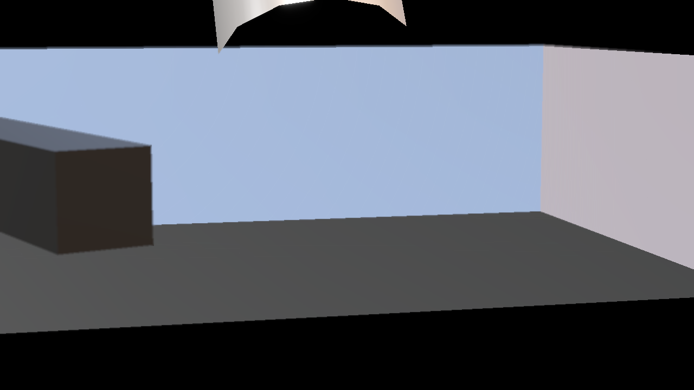
s07 底座微距3d · 2.71s · 218–283
底座微距后拉，金属边缘吃到轮廓光。
slow-pull macro product
Photoreal product commercial, 2.71s, 24fps, 16:9. Pure black studio, thin rim light on the metal, soft contact shadow, faint floor reflection. Subject: a six-axis AI monitor arm on a desk, matte metal segments, a 27-inch display. Slow constant pull-back, same speed as the other product shots, composition macro. The product itself holds still. The arm holds its pose. No people, no voiceover, no hands. Lens around 70mm, aperture f/2.8.
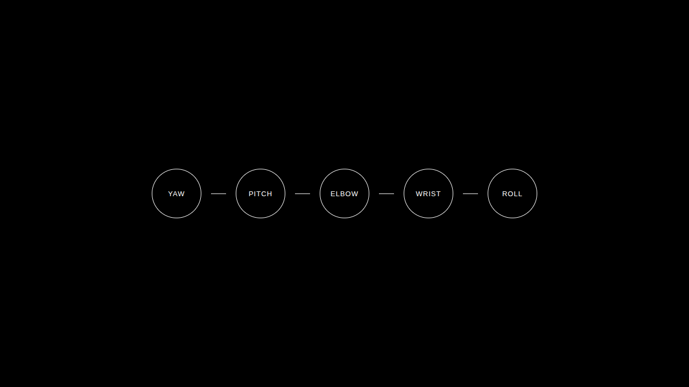
s08 结构broll-code · 0.67s · 283–299
六段铰链的结构示意。
YAW
PITCH
ELBOW
WRIST
ROLL
text
Photoreal product commercial, 0.67s, 24fps, 16:9. Pure black studio, thin rim light on the metal, soft contact shadow, faint floor reflection. Subject: a six-axis AI monitor arm on a desk, matte metal segments, a 27-inch display. static, composition centered. Full-frame kinetic type on black: "YAW / PITCH / ELBOW / WRIST / ROLL". No product, no people. No people, no voiceover, no hands. Lens around 40mm, aperture f/4.
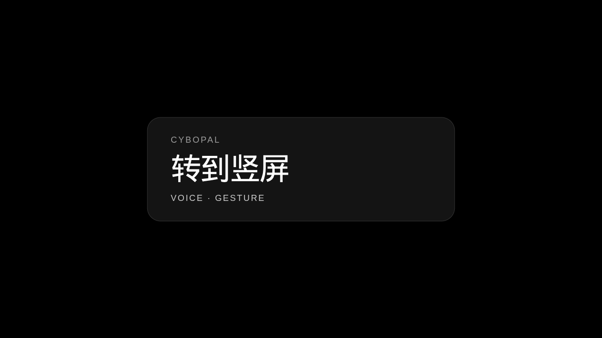
s09 语音指令broll-code · 0.71s · 299–316
界面示意：一句话让屏幕转竖。
转到竖屏
VOICE · GESTURE
text
Photoreal product commercial, 0.71s, 24fps, 16:9. Pure black studio, thin rim light on the metal, soft contact shadow, faint floor reflection. Subject: a six-axis AI monitor arm on a desk, matte metal segments, a 27-inch display. static, composition centered. Full-frame kinetic type on black: "转到竖屏 / VOICE · GESTURE". No product, no people. No people, no voiceover, no hands. Lens around 40mm, aperture f/4.
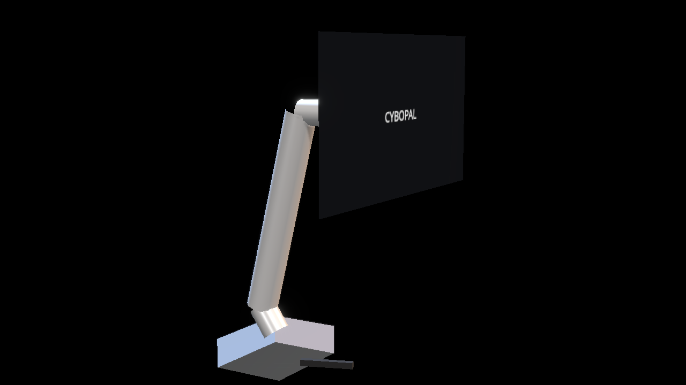
s10 整臂后拉3d · 3.33s · 316–396
产品居中，四周留黑，匀速后拉，姿态不动。
slow-pull centered product
Photoreal product commercial, 3.33s, 24fps, 16:9. Pure black studio, thin rim light on the metal, soft contact shadow, faint floor reflection. Subject: a six-axis AI monitor arm on a desk, matte metal segments, a 27-inch display. Slow constant pull-back, same speed as the other product shots, composition centered. The product itself holds still. The arm holds its pose. No people, no voiceover, no hands. Lens around 50mm, aperture f/4.
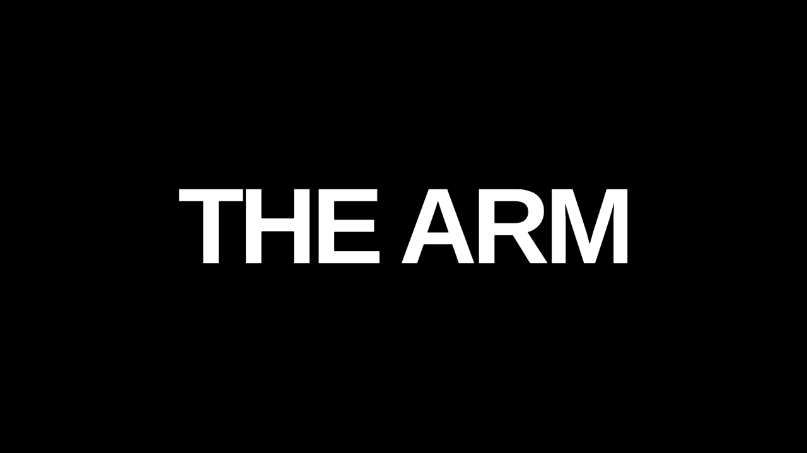
s11 手臂broll-code · 0.71s · 396–413
大字 THE ARM。
THE ARM
text
Photoreal product commercial, 0.71s, 24fps, 16:9. Pure black studio, thin rim light on the metal, soft contact shadow, faint floor reflection. Subject: a six-axis AI monitor arm on a desk, matte metal segments, a 27-inch display. static, composition centered. Full-frame kinetic type on black: "THE ARM". No product, no people. No people, no voiceover, no hands. Lens around 40mm, aperture f/4.
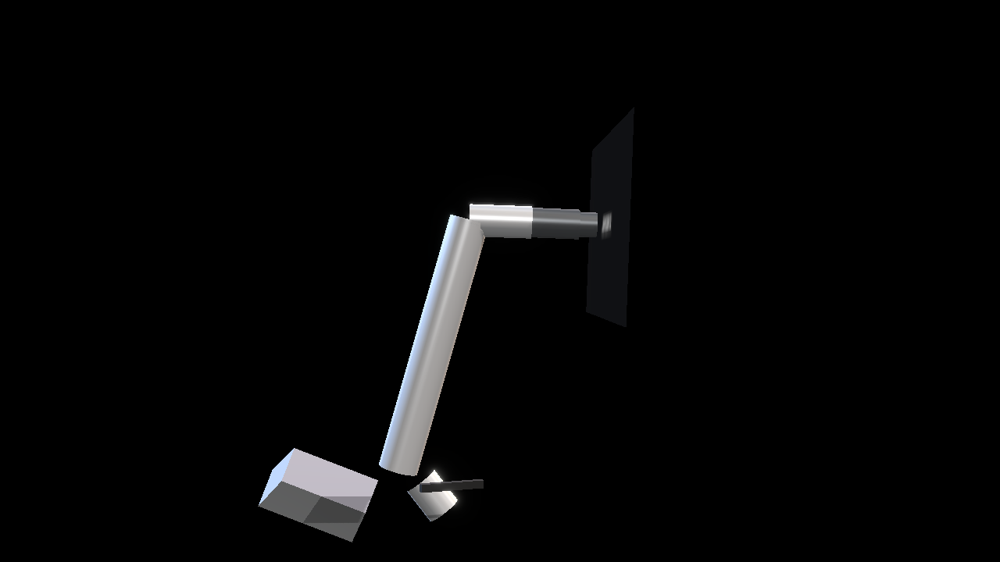
s12 展开3d · 3.33s · 413–493
正侧面固定机位，手臂从收拢滑到展开，底座和转轴都在画里。
locked side action
Photoreal product commercial, 3.33s, 24fps, 16:9. Pure black studio, thin rim light on the metal, soft contact shadow, faint floor reflection. Subject: a six-axis AI monitor arm on a desk, matte metal segments, a 27-inch display. Locked-off camera, composition side. The product moves; the camera does not. Base and pivots stay inside the frame. Action: 正侧面固定机位，手臂从收拢滑到展开，底座和转轴都在画里。 No people, no voiceover, no hands. Lens around 40mm, aperture f/5.6.
s13 展开字卡broll-code · 0.71s · 493–510
动作之后的一个短字。
UNFOLD
text
Photoreal product commercial, 0.71s, 24fps, 16:9. Pure black studio, thin rim light on the metal, soft contact shadow, faint floor reflection. Subject: a six-axis AI monitor arm on a desk, matte metal segments, a 27-inch display. static, composition centered. Full-frame kinetic type on black: "UNFOLD". No product, no people. No people, no voiceover, no hands. Lens around 40mm, aperture f/4.
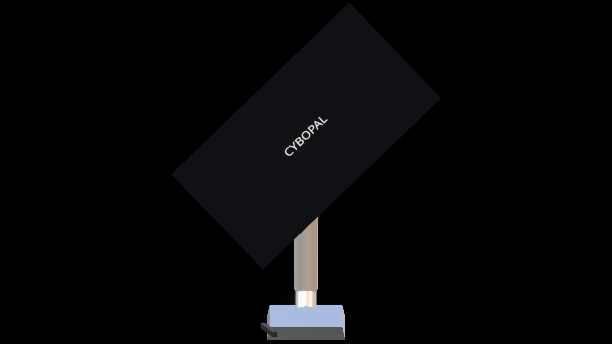
s14 转竖屏3d · 2.67s · 510–574
正面固定机位，屏幕自己转到竖屏。
locked front action
Photoreal product commercial, 2.67s, 24fps, 16:9. Pure black studio, thin rim light on the metal, soft contact shadow, faint floor reflection. Subject: a six-axis AI monitor arm on a desk, matte metal segments, a 27-inch display. Locked-off camera, composition front. The product moves; the camera does not. Base and pivots stay inside the frame. Action: 正面固定机位，屏幕自己转到竖屏。 No people, no voiceover, no hands. Lens around 45mm, aperture f/5.6.
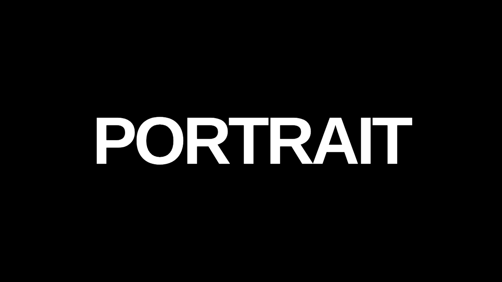
s15 竖屏字卡broll-code · 0.71s · 574–591
短字 PORTRAIT。
PORTRAIT
text
Photoreal product commercial, 0.71s, 24fps, 16:9. Pure black studio, thin rim light on the metal, soft contact shadow, faint floor reflection. Subject: a six-axis AI monitor arm on a desk, matte metal segments, a 27-inch display. static, composition centered. Full-frame kinetic type on black: "PORTRAIT". No product, no people. No people, no voiceover, no hands. Lens around 40mm, aperture f/4.
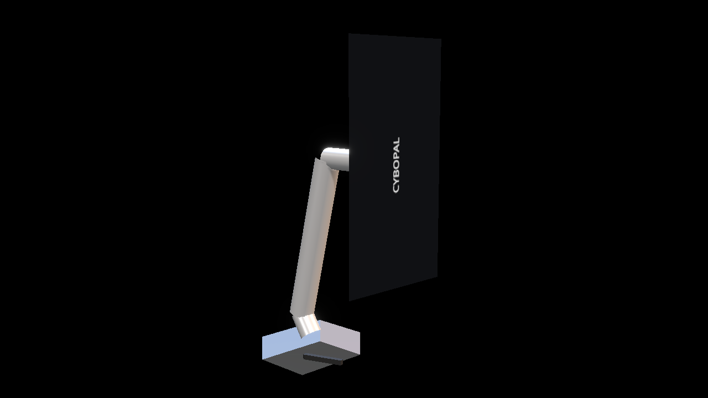
s16 线缆入槽3d · 2.67s · 591–655
45 度固定机位，线缆滑进走线槽。
locked angle45 action
Photoreal product commercial, 2.67s, 24fps, 16:9. Pure black studio, thin rim light on the metal, soft contact shadow, faint floor reflection. Subject: a six-axis AI monitor arm on a desk, matte metal segments, a 27-inch display. Locked-off camera, composition angle45. The product moves; the camera does not. Base and pivots stay inside the frame. Action: 45 度固定机位，线缆滑进走线槽。 No people, no voiceover, no hands. Lens around 40mm, aperture f/5.6.
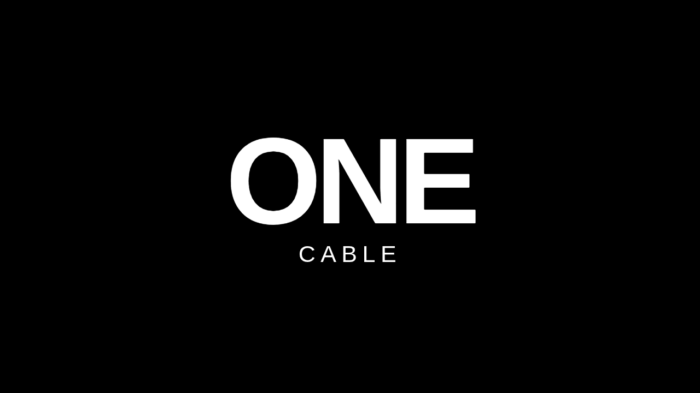
s17 一根线broll-code · 0.67s · 655–671
参数字 ONE CABLE。
ONE
CABLE
text
Photoreal product commercial, 0.67s, 24fps, 16:9. Pure black studio, thin rim light on the metal, soft contact shadow, faint floor reflection. Subject: a six-axis AI monitor arm on a desk, matte metal segments, a 27-inch display. static, composition centered. Full-frame kinetic type on black: "ONE / CABLE". No product, no people. No people, no voiceover, no hands. Lens around 40mm, aperture f/4.
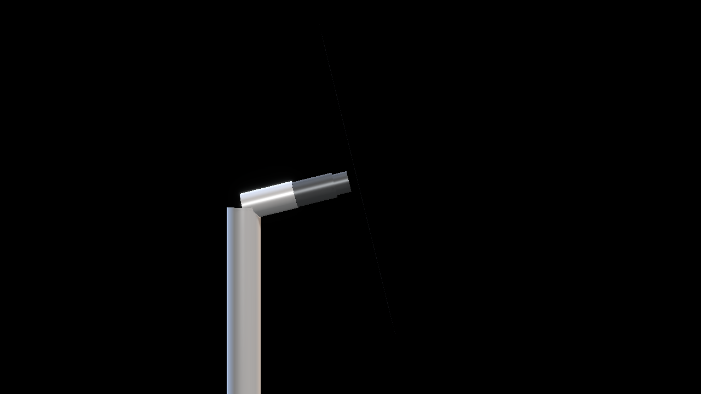
s18 点头3d · 2.04s · 671–720
侧面固定机位，屏幕轻轻点一下。
locked side action
Photoreal product commercial, 2.04s, 24fps, 16:9. Pure black studio, thin rim light on the metal, soft contact shadow, faint floor reflection. Subject: a six-axis AI monitor arm on a desk, matte metal segments, a 27-inch display. Locked-off camera, composition side. The product moves; the camera does not. Base and pivots stay inside the frame. Action: 侧面固定机位，屏幕轻轻点一下。 No people, no voiceover, no hands. Lens around 50mm, aperture f/5.6.
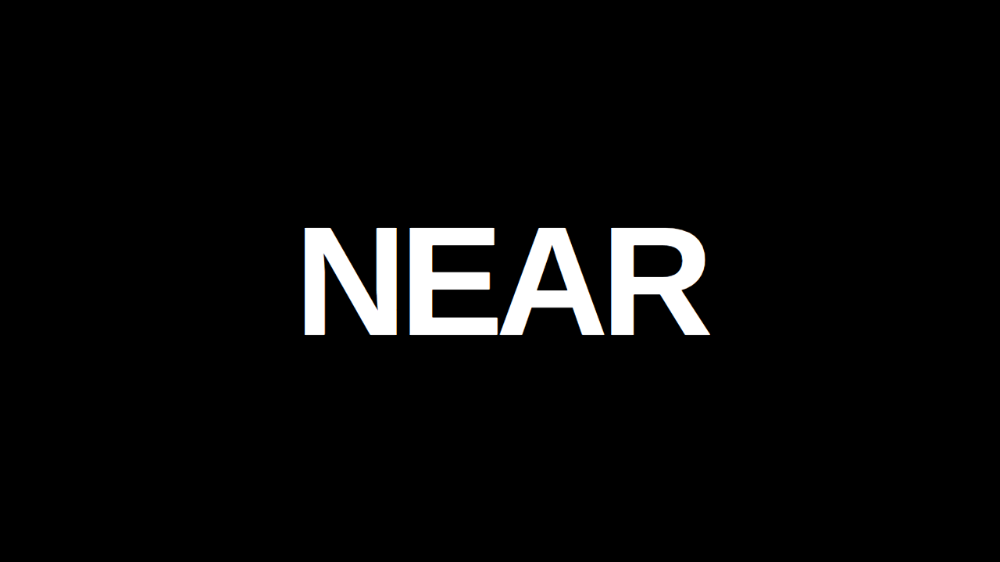
s19 近broll-code · 0.17s · 720–724
高潮字卡。
NEAR
climax
Photoreal product commercial, 0.17s, 24fps, 16:9. Pure black studio, thin rim light on the metal, soft contact shadow, faint floor reflection. Subject: a six-axis AI monitor arm on a desk, matte metal segments, a 27-inch display. static, composition centered. Full-frame kinetic type on black: "NEAR". No product, no people. No people, no voiceover, no hands. Lens around 40mm, aperture f/4.
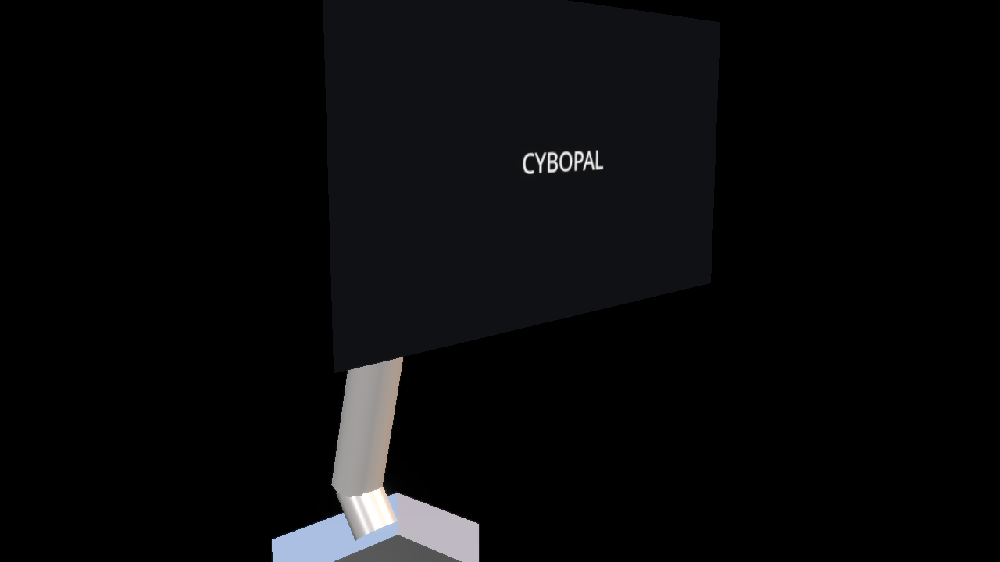
s20 斜侧闪切3d · 0.17s · 724–728
固定斜侧，半拍。
locked angle45 climax
Photoreal product commercial, 0.17s, 24fps, 16:9. Pure black studio, thin rim light on the metal, soft contact shadow, faint floor reflection. Subject: a six-axis AI monitor arm on a desk, matte metal segments, a 27-inch display. Locked-off camera, composition angle45. The product moves; the camera does not. Base and pivots stay inside the frame. Action: 固定斜侧，半拍。 No people, no voiceover, no hands. Lens around 35mm, aperture f/5.6.
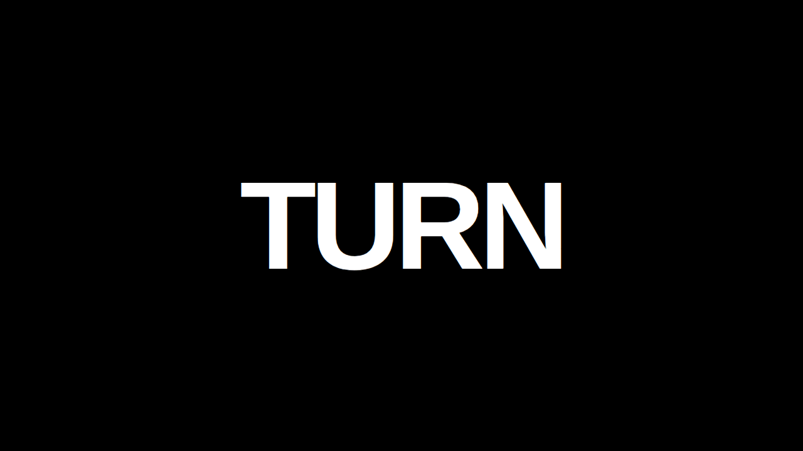
s21 转broll-code · 0.17s · 728–732
高潮字卡。
TURN
climax
Photoreal product commercial, 0.17s, 24fps, 16:9. Pure black studio, thin rim light on the metal, soft contact shadow, faint floor reflection. Subject: a six-axis AI monitor arm on a desk, matte metal segments, a 27-inch display. static, composition centered. Full-frame kinetic type on black: "TURN". No product, no people. No people, no voiceover, no hands. Lens around 40mm, aperture f/4.
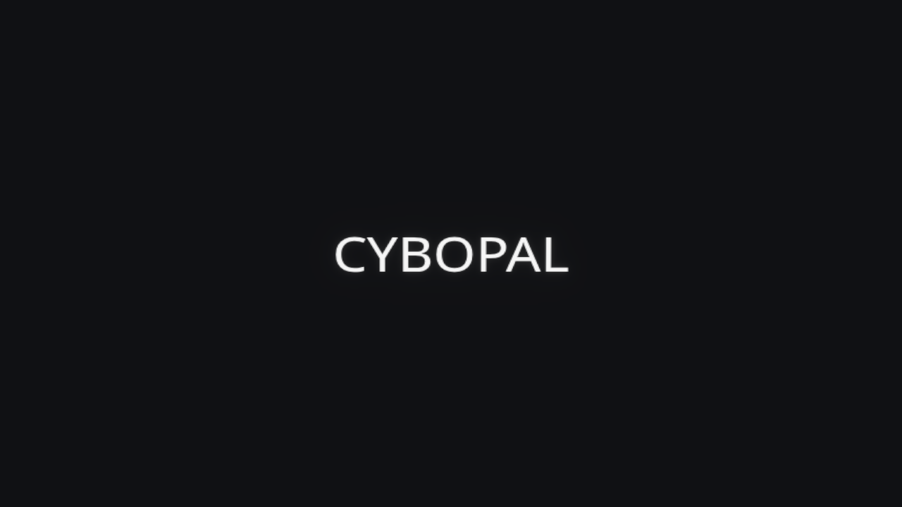
s22 正面闪切3d · 0.17s · 732–736
固定正面，半拍。
locked front climax
Photoreal product commercial, 0.17s, 24fps, 16:9. Pure black studio, thin rim light on the metal, soft contact shadow, faint floor reflection. Subject: a six-axis AI monitor arm on a desk, matte metal segments, a 27-inch display. Locked-off camera, composition front. The product moves; the camera does not. Base and pivots stay inside the frame. Action: 固定正面，半拍。 No people, no voiceover, no hands. Lens around 50mm, aperture f/5.6.
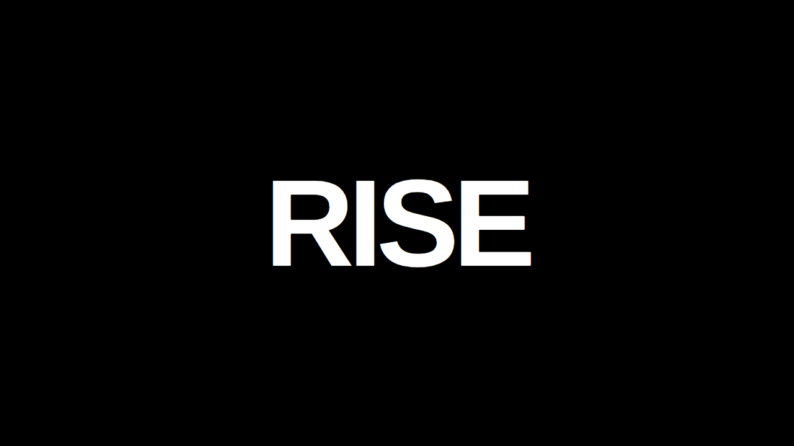
s23 升broll-code · 0.17s · 736–740
高潮字卡。
RISE
climax
Photoreal product commercial, 0.17s, 24fps, 16:9. Pure black studio, thin rim light on the metal, soft contact shadow, faint floor reflection. Subject: a six-axis AI monitor arm on a desk, matte metal segments, a 27-inch display. static, composition centered. Full-frame kinetic type on black: "RISE". No product, no people. No people, no voiceover, no hands. Lens around 40mm, aperture f/4.
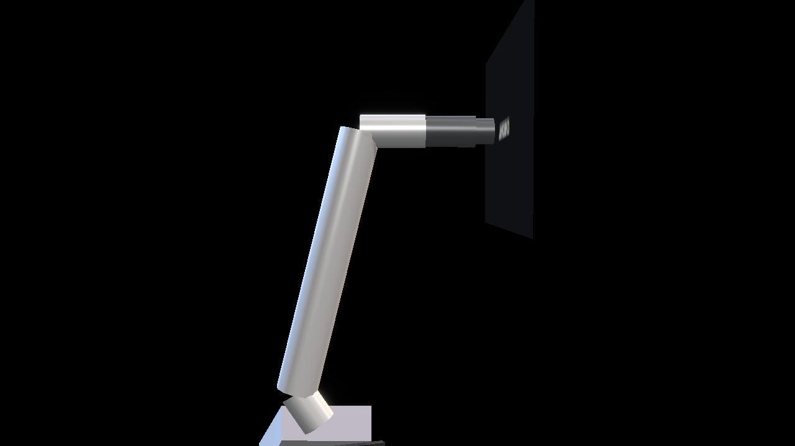
s24 侧面闪切3d · 0.17s · 740–744
固定侧面，半拍。
locked side climax
Photoreal product commercial, 0.17s, 24fps, 16:9. Pure black studio, thin rim light on the metal, soft contact shadow, faint floor reflection. Subject: a six-axis AI monitor arm on a desk, matte metal segments, a 27-inch display. Locked-off camera, composition side. The product moves; the camera does not. Base and pivots stay inside the frame. Action: 固定侧面，半拍。 No people, no voiceover, no hands. Lens around 35mm, aperture f/5.6.
s25 现在broll-code · 0.17s · 744–748
高潮最后一个字。
NOW
climax
Photoreal product commercial, 0.17s, 24fps, 16:9. Pure black studio, thin rim light on the metal, soft contact shadow, faint floor reflection. Subject: a six-axis AI monitor arm on a desk, matte metal segments, a 27-inch display. static, composition centered. Full-frame kinetic type on black: "NOW". No product, no people. No people, no voiceover, no hands. Lens around 40mm, aperture f/4.
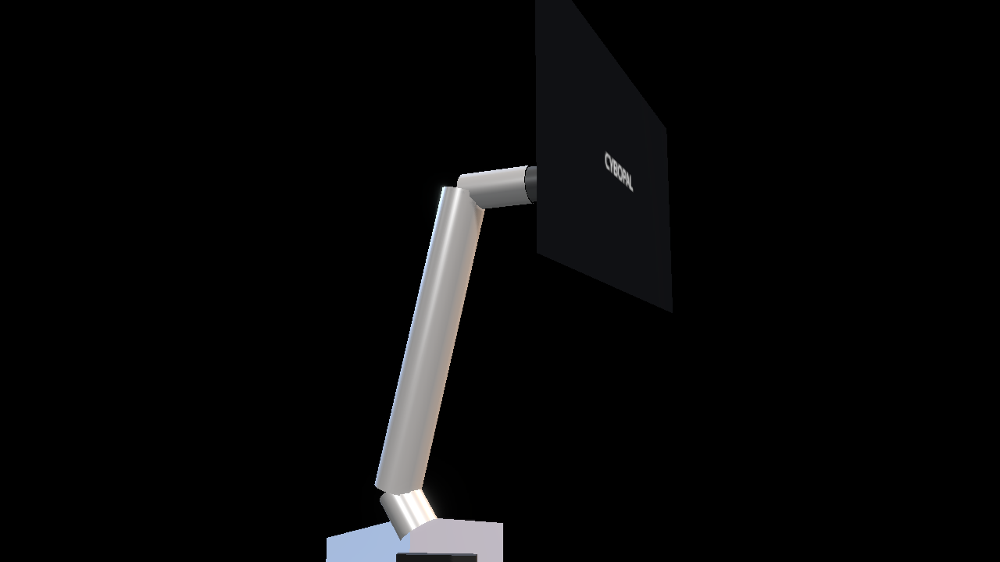
s26 低机位闪切3d · 0.17s · 748–752
低机位固定，半拍。
locked low climax
Photoreal product commercial, 0.17s, 24fps, 16:9. Pure black studio, thin rim light on the metal, soft contact shadow, faint floor reflection. Subject: a six-axis AI monitor arm on a desk, matte metal segments, a 27-inch display. Locked-off camera, composition low. The product moves; the camera does not. Base and pivots stay inside the frame. Action: 低机位固定，半拍。 No people, no voiceover, no hands. Lens around 28mm, aperture f/5.6.
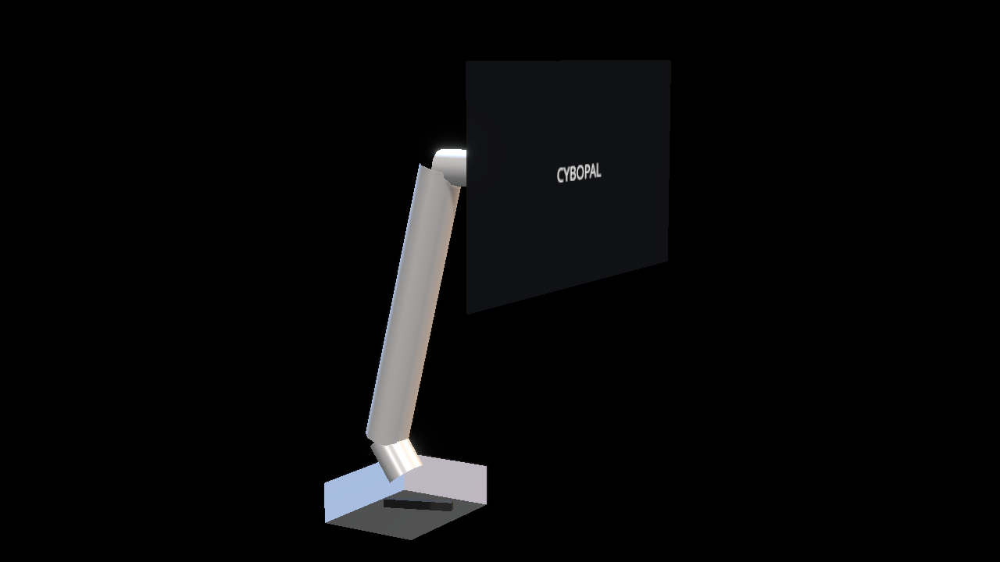
s27 英雄后拉3d · 4.75s · 752–866
整臂居中，再次匀速后拉，速度和前面的产品镜一样。
slow-pull centered product
Photoreal product commercial, 4.75s, 24fps, 16:9. Pure black studio, thin rim light on the metal, soft contact shadow, faint floor reflection. Subject: a six-axis AI monitor arm on a desk, matte metal segments, a 27-inch display. Slow constant pull-back, same speed as the other product shots, composition centered. The product itself holds still. The arm holds its pose. No people, no voiceover, no hands. Lens around 55mm, aperture f/4.
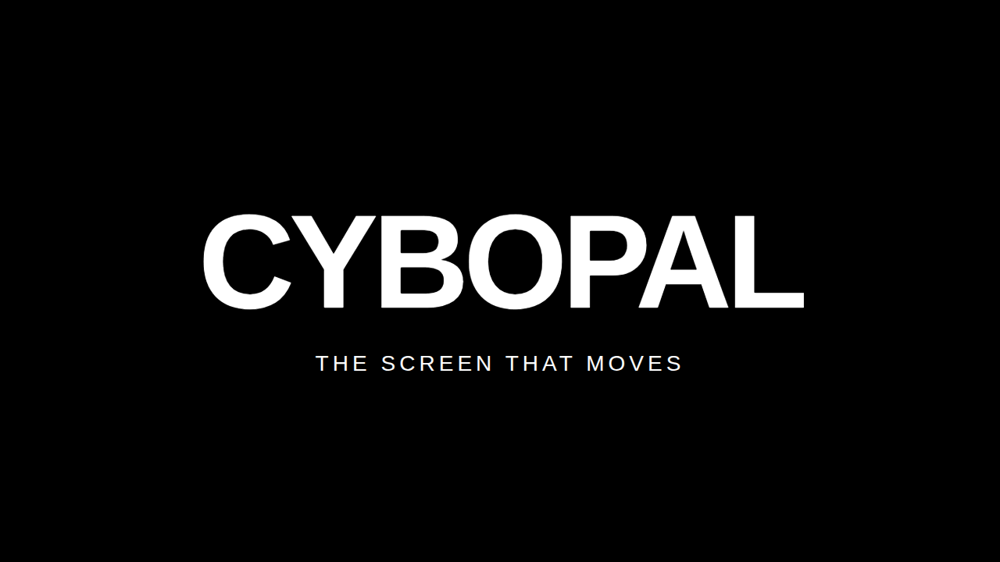
s28 标志broll-code · 4.04s · 866–963
logo 长停，让观众喘口气。
CYBOPAL
THE SCREEN THAT MOVES
logo
Photoreal product commercial, 4.04s, 24fps, 16:9. Pure black studio, thin rim light on the metal, soft contact shadow, faint floor reflection. Subject: a six-axis AI monitor arm on a desk, matte metal segments, a 27-inch display. static, composition centered. Full-frame kinetic type on black: "CYBOPAL / THE SCREEN THAT MOVES". No product, no people. No people, no voiceover, no hands. Lens around 40mm, aperture f/4.